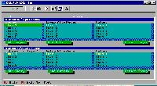

LinCS/tiger
The System Configuration Tool
About
LinCS (Linux Configuration System) is a configuration tool aiming to offer a uniform way for applications, the OS itself and machine clusters to store/retrieve their configuration information. Thus, it will completely replace the standard configuration files, such as the ones stored in /etc. It follows on the road opened by other configuration tools such as gconf but it is novel in that it addresses the area of system configuration. Another novelty is that it offers a transparent way for "older" applications that use configuration files to live on a LinCS-configured OS. Its design is modular and extensible, allowing for additional functionality plug-ins. Applications using LinCS will benefit from features such as notifications when data change and backtracking, among others..

Currently, we are in a pre-alpha stage.